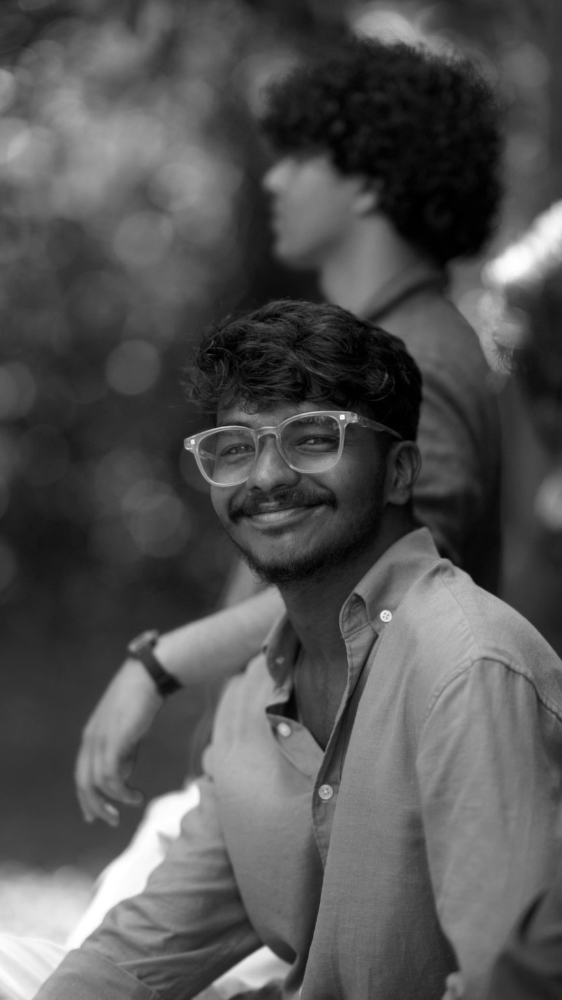

The Quiet Between
Atmospheric storytelling, measured pacing, and a film-inspired grade.
● INDEPENDENT VIDEO EDITOR · OPEN FOR PROJECTS
I'm Goutham Das K P — a video editor shaping raw footage into cinematic films, engaging Reels and Shorts, music videos, and brand stories.
EDITED WITH INTENTION — EST. 2026
01 / SELECTED WORK
Different formats, one goal: make every second count. These are concept placeholders—swap in your actual edits before sharing.
Atmospheric storytelling, measured pacing, and a film-inspired grade.
A quick hook, beat-matched cuts, and bold captions for mobile viewers.
Performance-led visuals, rhythmic cuts, and expressive transitions.
A polished product film with detail shots and premium visual rhythm.
Immersive travel visuals, natural sound, and a warm filmic finish.
Personality-first creator content shaped for retention and replay.
NOTE These are illustrative concepts, not real client work or playable videos. Replace them with your own edits before sending this portfolio to clients.
02 / WHAT I DO
A flexible editing approach for stories, creators, artists, and brands.
Story-driven edits, film-inspired pacing, color mood, sound design, and polished finishing.
FILMS · TRAVEL · MONTAGESStrong hooks, clean cuts, captions, motion text, and platform-ready vertical exports.
INSTAGRAM · YOUTUBE · SHORTSBeat-matched edits, performance sequences, transitions, and visual rhythm.
PERFORMANCE · LYRIC · PROMOProduct storytelling, social ads, launch edits, and concise brand-focused videos.
PRODUCTS · BRANDS · CAMPAIGNS
BEHIND THE FRAMES · GOUTHAM DAS K P03 / A LITTLE ABOUT ME
I'm Goutham Das K P, a video editor interested in the craft behind a strong visual story—from timing and sound to color and the final detail. I work across short-form content and cinematic styles, adapting the edit to each project's purpose.
Update this bio to reflect your real experience, location, preferred projects, and tools.
04 / THE PROCESS
Align on the goal, audience, references, and format.
Find the strongest moments and build the cut.
Refine pacing, sound, color, captions, and details.
Export the finished video in the agreed format.
05 / HAVE A PROJECT?
Share your idea, footage, or reference. Let's talk about the edit.
Start a conversation ↗GDKP